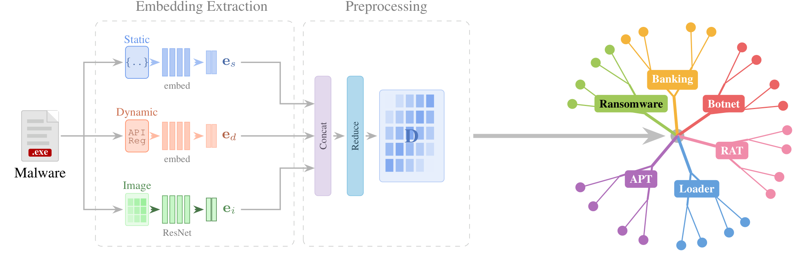
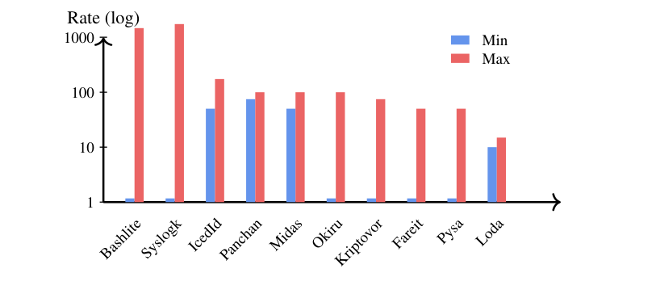
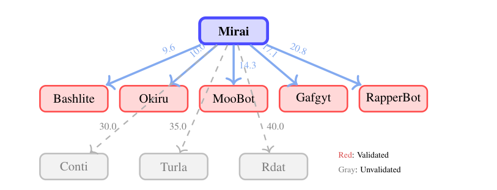

MalTree: Tracing Malware Evolution from Embeddings at Scale
A phylogenetic lens on malware: reconstructing how families evolve across 103,883 samples and 538 families.
Abstract
Malware detection remains largely reactive: machine learning models trained on known samples degrade as threats evolve. Understanding evolutionary relationships among malware families can inform proactive defense, but traditional reverse engineering can take months to years to uncover such lineage relationships. We propose MalTree, a framework that applies bioinformatics-inspired phylogenetic techniques (UPGMA and Neighbor-Joining) at scale to model malware evolution automatically using structural, behavioral, and image-based features. We introduce temporal validation using VirusTotal timestamps to assess whether inferred trees reflect actual evolutionary order. MalTree achieves 87% temporal consistency, indicating that inferred evolutionary relationships closely align with real-world emergence timelines. Our analysis shows that some families mutate over 10 times faster than others, suggesting that detection strategies should be tailored to family-specific evolutionary tempos. Case studies, including the Mirai botnet, confirm that inferred relationships from our phylogenetic tree align with documented threat intelligence. Our framework provides a foundation for shifting malware analysis from sample-by-sample classification toward lineage-aware evolutionary modeling.
The MalTree Pipeline
MalTree extracts three complementary embeddings from every sample: pseudo-static features from memory dumps, dynamic features from sandbox behavior, and an image embedding of the binary. The embeddings are fused and reduced into a single representation, turned into a pairwise distance matrix, and resolved into a phylogenetic tree with Neighbor-Joining or UPGMA.

Interactive Phylogenetic Tree
Explore the full tree of 538 malware families below. Pan and zoom to follow how families branch, cluster, and diverge across the malware landscape.
Key Findings
A validated phylogeny at unprecedented scale
MalTree builds validated phylogenetic trees from 103,883 malware samples across 538 families in 11 hours with UPGMA or 3 days with Neighbor-Joining on 20 cores, the largest such analysis to date. Neighbor-Joining with outgroup rooting reaches 87.1% temporal consistency against VirusTotal first-submission timestamps. Those timestamps are independent of the family labels used to train the embeddings, so the agreement shows the trees capture genuine evolutionary order rather than feature similarity; random ordering would score about 50%.
Malware families evolve at very different tempos

This rate heterogeneity violates the constant-rate (molecular clock) assumption behind UPGMA, and explains why Neighbor-Joining, which lets lineages evolve at different rates, produces better-rooted trees. In practice, detection strategies may need to be tuned to each family's evolutionary tempo.
The Mirai lineage, recovered automatically

The 2016 Mirai source-code leak spawned many variants. Without supervision, MalTree recovers five Mirai descendants, Bashlite, Okiru, MooBot, Gafgyt, and RapperBot, each corroborated by documented threat intelligence. Weaker, unverified links to Conti, Turla, and Rdat carry visibly higher edge weights, so MalTree both confirms known relationships and flags hypotheses that warrant further investigation.
BibTeX
@inproceedings{amalan2026maltree,
title = {MalTree: Tracing Malware Evolution from Embeddings at Scale},
author = {Amalan, Akash and Smaragdakis, Georgios and Viering, Tom},
booktitle = {Proceedings of the 43rd International Conference on Machine Learning (ICML)},
series = {PMLR},
volume = {306},
year = {2026}
}